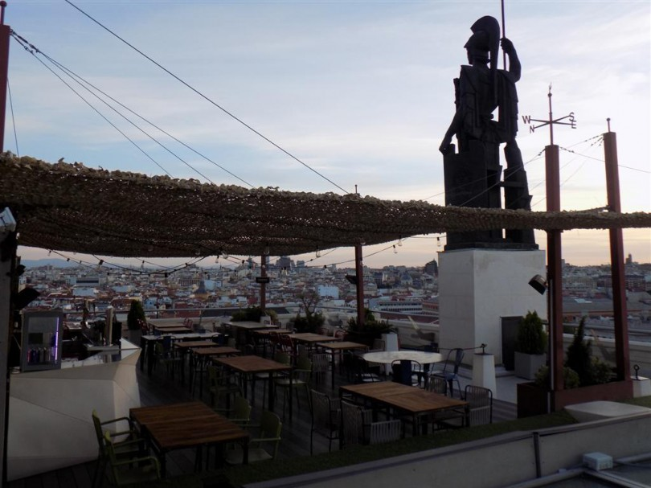
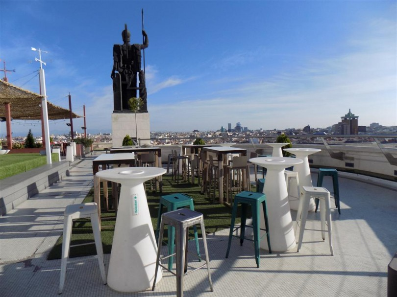
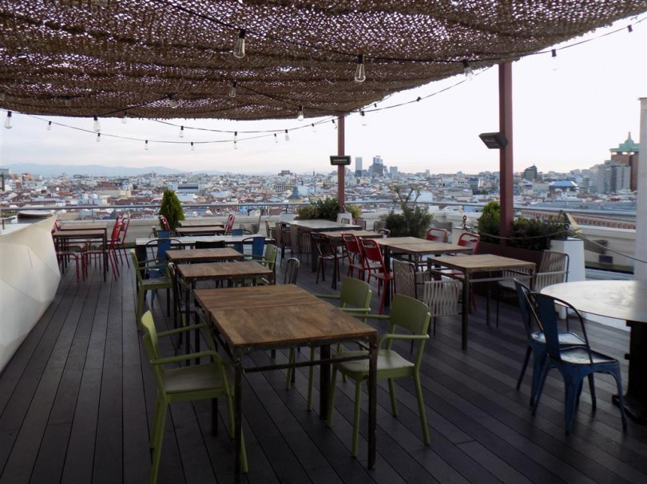
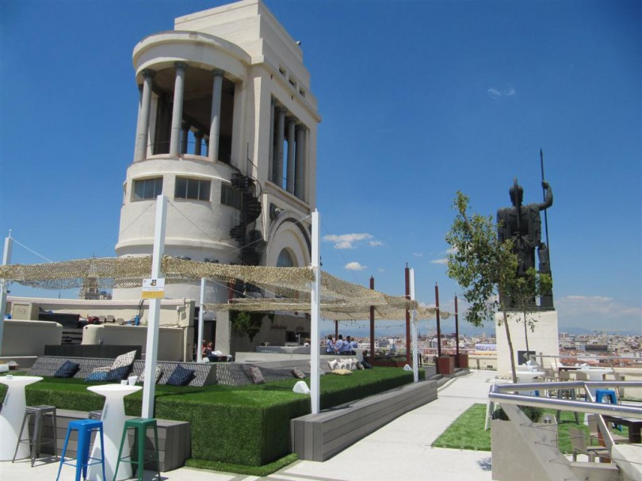

The reception of ICSME 2018 will be in the roof-top terrace of the Círculo de Bellas Artes, which has one of the best and most spectacular views of Madrid, and offers its visitors an unparalleled perspective of the urban landscape of the city. Located 56 meters high on Calle Alcalá, it was partially closed for a period of time as a solarium. The building is crowned by the sculpture Minerva, by Juan Luis Vassallo. It is a bronze piece that represents the Roman goddess of wisdom and art, emblem of the Circle since its founding. One of the iconic pictures of Madrid, and which serves as the banner of ICSME 2018 (see above), can be taken from the roof-top terrace where the reception will take place!
Access to the roof-top terrace is free for ICSME participants (and those who have bought an extra reception ticket) on Wednesday September 26th from 19:00 to 22:00, but take into consideration that food and drinks will be served (for free) only from 19:30 to 20:30. Don't forget to take your camera with you!
 
 